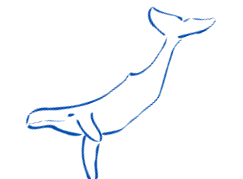
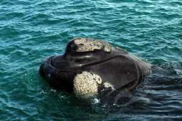
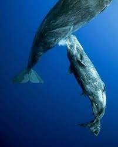
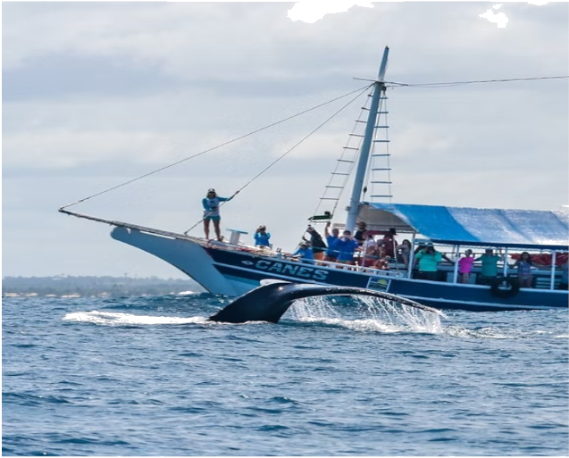

Baleia
jubarte

A baleia jubarte, cujo nome científico é Megaptera novaeangliae – “grandes asas da Nova Inglaterra”, referência às enormes nadadeiras peitorais e à região dos Estados Unidos na qual a espécie foi identificada pela ciência pela primeira vez é uma das mais conhecidas e mais queridas dentre as grandes baleias que habitam os mares do planeta.

A baleia jubarte, cujo nome científico é Megaptera novaeangliae – “grandes asas da Nova Inglaterra”, referência às enormes nadadeiras peitorais e à região dos Estados Unidos na qual a espécie foi identificada pela ciência pela primeira vez é uma das mais conhecidas e mais queridas dentre as grandes baleias que habitam os mares do planeta.
Baleia Franca
As baleias francas são cetáceos de grande tamanho, podendo atingir, segundo registros históricos, mais de 17 metros de comprimento.
O corpo é negro e arredondado, sem aleta dorsal e a cabeça ocupa quase um quarto do comprimento total, nela destacando-se a grande curvatura da boca, que abriga, pendentes, cerca e 250 pares de cerdas da barbatana, que são ásperas e na sua maior extensão negro-oliváceas. O ventre apresenta manchas brancas irregulares. As fêmeas trazem mamilas na região inguinal e glândulas mamárias que podem ser bastante espessas, até cerca de 10cm.
A mais marcante característica morfológica da espécie, entretanto, é o conjunto de calosidades que apresentam as baleias francas no alto e nas laterais da cabeça. Trata-se de estruturas formadas por espessamentos naturais da pele, que nascem já com o animal e são relativamente macias em fetos e filhotes recém-nascidos, mas tornam-se mais rígidas com o crescimento do animal;

As nadadeiras peitorais das baleias franca também são bastante características, com formato trapezoidal.
A coloração do corpo é predominantemente preta, podendo variar ao acinzentado, com manchas brancas no ventre.
Migração
da baleia

As baleias-jubarte realizam longas migrações anualmente, deslocando-se das áreas de alimentação nas regiões polares para as áreas de reprodução em águas mais quentes, como o litoral brasileiro. A população que se reproduz na costa brasileira realiza uma jornada de aproximadamente 9.000 km entre a Antártida e o Brasil.
Não existe um mapa em tempo real das baleias-jubarte, mas é possível encontrar informações sobre a rota migratória e avistamentos recentes.

As baleias jubarte estão presentes nos 3 oceanos do Mundo: Atlântico, Pacífico e Índico. Existem populações no Hemisfério Norte e no Hemisfério Sul, e em cada hemisfério, se dividem nos oceanos. Pelo que se sabe até hoje, essas populações não se misturam… (por enquanto existem raros casos relatados de jubartes que cruzaram os oceanos…).
E as baleias francas?
As baleias jubarte e as baleias francas possuem processos migratórios distintos, embora ambas sejam conhecidas por percorrerem grandes distâncias.
As baleias francas passam o verão nos pólos onde se alimentam, e migram para águas tropicais mais quentes durante o inverno para acasalamento e procriação. Apesar da maioria dos especialistas considerarem este padrão de migração como regra geral para os misticetos, evidências diretas só foram obtidas através de reavistagens de indivíduos fotoidentificados em áreas de reprodução e alimentação. Na América do Sul a principal concentração reprodutiva ocorre nas águas costeiras da Península Valdés, Argentina, com uma pequena população encontrada no sul do Brasil.
Nas áreas de reprodução a distribuição das baleias francas é frequentemente relacionada a águas calmas e rasas. A manutenção de determinadas áreas de reprodução parece ocorrer simplesmente por tradição, como um reflexo da história evolutiva dos misticetos, e há preferência por regiões com águas calmas bem como regiões que ofereçam proteção contra predadores como orcas e tubarões.
REPRODUÇÃO DA BALEIA JUBARTE
Exposição da nadadeira
peitoral

O movimento de exposição e batidas das longas nadadeiras peitorais constitui um comportamento "convidativo"
Este comportamento é mais frequentemente realizado pela fêmea do grupo. Trios também exibem estes comportamentos; porém, na maioria das vezes, são especialmente interessantes de serem observados pelos movimentos sutis. Elas expõem as nadadeiras peitorais, a cabeça e nadam lateralmente. Apesar da cópula em baleias-jubarte nunca ter sido observada, pode-se sugerir que esta movimentação constitua um tipo de corte, para chamar a atenção.
As baleias-jubarte preferem as águas quentes e mais perto da costa para dar à luz, onde os seus filhotes têm um ambiente mais favorável para passar os primeiros tempos das suas vidas. Os machos também migram para as regiões tropicais buscando fêmeas disponíveis para acasalar. Após a cópula, as fêmeas vão para as regiões subantárticas se alimentar e retornam para o Brasil para o nascimento dos seus filhotes, com um período de gestação de aproximadamente 11 meses. Nos primeiros meses da sua vida, o filhote normalmente é observado em comportamento de repouso enquanto se alimenta do leite nutritivo da sua mãe para crescer e se preparar para a sua primeira migração de 4000 km, distância que separa a costa baiana das ilhas da Geórgia do Sul e Sandwich do Sul, onde a população se alimenta.
Reprodução da Baleia Franca
Ao findar-se o verão, as baleias francas deixam as áreas de alimentação nas latitudes mais frias e buscam as regiões costeiras onde se concentram para o acasalamento, a parição e amamentação dos filhotes nascidos no ano subseqüente à fecundação. Na costa do Brasil, tal área deve ter atingido em períodos históricos desde a divisa com o Uruguai no Arroio Chuí até pelo menos a Baía de Todos os Santos. Atualmente, a área de concentração restringe-se à Região Sul, com registros de alguns indivíduos efetuando-se, regularmente,
Estima-se que a gestação da espécie esteja em torno dos 12 meses, que corresponderia à sazonalidade de sua migração de retorno às áreas de reprodução, onde permanecem no inverno e primavera. A reprodução é poliândrica, ou seja, o acasalamento ocorre com diversos machos cortejando uma única fêmea, que tenta evitar a cópula posicionando-se na superfície com o ventre para cima, sendo que em águas brasileiras grupos de acasalamento são comumente avistados ao longo da costa do Rio Grande do Sul.
Os filhotes nascem normalmente entre junho e dezembro, já com cerca de 5 metros de comprimento e um
peso
entre 4 e 5 toneladas; nas primeiras semanas de vida o filhote pode adquirir cerca de 50 Kg/dia de
peso.
Em média, as fêmeas conhecidas nas áreas de reprodução têm um filhote a cada 3 anos.
Amamentação!
A fêmea pode ficar em posição vertical para facilitar a respiração do filhote enquanto ele bebe o leite rico em gordura. Segundo os pesquisadores, as mães usam menos movimentos de cauda durante a amamentação, e os filhotes parecem aumentar a velocidade de cauda e a aceleração geral do corpo durante a alimentação. Quando seu filhote está sendo amamentado, a baleia -jubarte alinha-se com seu filhote e esguicha um leite espesso e rico para a boca do filhote.

Onde pode acontecer?
Os dados indicam que a alimentação pode ocorrer em qualquer lugar, desde uma profundidade de cerca de 12 metros - que seria visível da superfície - até cerca de 200 metros. A partir de vídeos com tags, os pesquisadores observaram eventos de amamentação com duração média de 23 segundos, muitas vezes intercalados entre os movimentos que as baleias fazem para encontrar e consumir alimento. “As mães equilibram suas necessidades com as necessidades dos filhotes”, relatam os pesquisadores.
O DESMAME
O desmame ocorre entre os 6 e 10 meses de vida do filhote. Após 1 ano, em que o filhote mama e aprende a se alimentar independentemente, ele retorna ao Brasil acompanhando a sua mãe, e pronto para iniciar a sua jornada sozinho. Após cerca de um ano, o filhote se torna independente e começa a se afastar da mãe, a separação é um processo natural e gradual, com o filhote aprendendo a sobreviver de forma independente e a se integrar à sociedade das baleias jubarte.
APÓS O DESMAME
Os filhotes permanecem com a mãe? Como eles se relacionam?
Depois que os filhotes são desmamados, a relação delas com os bebês muda um pouco, mas o cuidado continua.
Assim que o filhote de baleia jubarte para de mamar a mãe não fica mais tão grudada o tempo todo. O filhote já aprendeu a caçar e a se virar. A mãe ainda fica por perto, especialmente se o filhote ainda estiver se adaptando a essa nova fase. Ela pode continuar a guiá-lo, mostrando os melhores locais para se alimentar e as rotas de migração.
Além disso, a mãe jubarte ensina comportamentos essenciais para a sobrevivência, como técnicas de caça mais eficientes e como se defender de predadores. É um aprendizado contínuo, mesmo após o desmame.
Agora, sobre eles ficarem juntos durante toda a vida, a resposta é não. As baleias jubarte são animais que vivem de forma bastante independente após atingirem a maturidade. Os laços familiares são fortes durante a infância e adolescência, mas depois que o filhote se torna um adulto capaz de se reproduzir e se sustentar, ele segue seu próprio caminho. Eles podem até se cruzar novamente em áreas de alimentação ou durante as migrações, mas não formam grupos familiares permanentes como alguns outros animais. Cada um tem sua própria jornada pelo vasto oceano!
ALIMENTAÇÃO!
A área de alimentação principal das jubartes brasileiras se encontra no entorno das ilhas Geórgia do Sul na região antártica. As baleias jubarte se alimentam principalmente de krill e pequenos peixes, como sardinhas, elas possuem franjas de cerdas (semelhantes às escovas de dente, só que compridas e penduradas como cortinas dos dois lados do céu da boca) que utilizam para segurar o alimento. Elas abrem sua enorme boca e avançam sobre cardumes de krill ou de pequenos peixes, abocanhando-os junto com uma grande quantidade de água. Depois, usam a língua para expelir a água e o alimento fica preso nas cerdas, sendo depois engolido.
Muitas vezes as jubartes podem ser vistas colaborando umas com as outras nas áreas de alimentação, encurralando os cardumes de suas presas com cortinas de bolhas que sopram sob a água e depois subindo até a superfície para apanhá-las.
As baleias francas alimentam-se “filtrando” o alimento na superfície, num comportamento que se assemelha ao arrasto superficial de uma rede, em que o animal nada lentamente com a boca aberta, deixando a água fluir por entre as cerdas expostas que capturam aí os pequenos organismos que constituem seu alimento. A espécie é seletiva, buscando principalmente pequenos copépodos (Calanus, Microcalanus, Pseudocalanus, Oithoma e Metridia), além do krill Euphasia superba e Munida gregaria.
O que é o Krill?
O modesto krill mede apenas cerca de seis centímetros de comprimento, mas representa um elo gigante na cadeia alimentar global. Esses pequenos crustáceos, que se parecem com camarões, são fundamentais nos ecossistemas marinhos da Terra.
O krill se alimenta de fitoplâncton, plantas microscópicas e unicelulares que flutuam perto da superfície do oceano e vivem de dióxido de carbono e de raios solares. Como presas, são o principal alimento básico nas dietas de centenas de animais diferentes, entre peixes, aves e baleias.
-
Nome comum: Krill
-
Nome científico: Euphausiacea
-
Dieta: Herbivoro
-
Coletivo: Enxame
-
Tamanho: 6cm
-
Peso: 0,99 gramas
Eles passam seus dias evitando predadores nas profundezas frias do Oceano Antártico, cerca de 97 metros abaixo da superfície. Durante a noite, voltam à superfície em busca de fitoplâncton.
O que acontece com o corpo dessas baleias
depois que elas morrem:
A carcaça desses mamíferos cumpre uma função importante em seu ambiente original. Depois da morte, o corpo das baleias pode se expandir de forma significativa por conta da variedade de gases, incluindo metano, dióxido de carbono e nitrogênio que sua carcaça em decomposição produz, o que faz que a carcaça flutue. Nesse momento, a carcaça serve de alimento para tubarões.
Mesmo depois de a carcaça ficar reduzida a ossos, ainda há bastante comida para organismos menores. Caracóis marinhos, vermes e camarões devoram o que restou de gordura ou músculo. Eles também se alimentam da matéria orgânica que é emitida pela carcaça. Esses animais se mudam para perto dos restos da baleia até se tornarem adultos e formam uma população. Bactérias, por sua vez, comem os ossos da carcaça.
Por conta das forças do vento e das ondas, da degradação e dos danos provocados pelos necrófagos, as carcaças afundam até chegar no leito do mar. Sua decomposição gradual sustenta comunidades microbianas e organismos de águas profundas.
O fundo do oceano, geralmente deserto, recebe uma fonte repentina e imensa de alimentos. Caranguejos, lagostas, peixes-bruxa comem a gordura e os músculos da carcaça, que pode alimentar esses animais durante dois anos.
TURISMO
No Brasil, as baleias-jubarte e as baleias-franca escolhem o litoral para se reproduzir, especialmente em regiões como Santa Catarina e Bahia. As baleias-jubarte são mais comumente vistas no Sudeste e no Nordeste…
As baleias-jubarte migram das águas polares da Antártida para as águas mais quentes do Brasil. Chegam ao Brasil normalmente em junho e sobem em direção ao Nordeste, ficando próximas da costa até novembro.
A temporada de observação de baleias-jubarte no Brasil se estende de junho a novembro, com o pico de avistamentos no Sudeste ocorrendo em julho. Costumam ser vistas em praias de Santa Catarina, como Garopaba, Imbituba e Laguna, além de locais como o arquipélago de Abrolhos, na Bahia. Pernambuco também se destaca como local de reprodução, com as baleias-jubarte voltando a se reproduzir no mar da região após um período de quase desaparecimento.
Locais para observação de baleias jubarte:
-
Abrolhos (BA): Considerado um dos melhores pontos do Brasil para observar baleias-jubarte, com a temporada de julho a novembro.
-
Vitória (ES): Oferece saídas diárias para observação durante a temporada.
-
Ilhabela e Ubatuba (SP): Regiões com forte apelo para o turismo de observação de baleias.
-
Rota da Baleia Franca (SC): As cidades de Laguna, Imbituba e Garopaba recebem baleias-franca, e as baleias-jubarte também podem ser vistas durante a migração.
-
Costa das Baleias (BA): A região entre Prado e Caravelas, incluindo Alcobaça e Nova Viçosa, é um local com alta concentração de baleias.
-
São Sebastião (SP): Assim como Ilhabela, São Sebastião se destaca no turismo de observação de baleias.
Visite os Espaços Baleia Jubarte e Ilhas Interpretativas! Bases em Praia do Forte, Itacaré e Caravelas, na Bahia, Vitória, no Espírito Santo, e Ilhabela, em São Paulo.

Datas e locais para observação de
baleias Franca
A temporada reprodutiva das baleias-francas no Brasil é de julho a novembro, com pico de ocorrência em setembro. No Brasil a principal área de concentração é a APA da Baleia Franca, no litoral centro-sul de Santa Catarina. Em função da maior quantidade e baleias, o melhor período para observação é entre a segunda quinzena de agosto e primeira quinzena de outubro.
a Rota da Baleia Franca se estende desde a cidade de Garopaba até Laguna, passando por Imbituba. Mas os guias que já estão acostumados têm dicas de locais específicos para observar as baleias – são as áreas refúgio. Em Garopaba, os melhores lugares para avistá-las são a Praia Central, Praia da Gamboa e Praia do Silveira. E, em Imbituba, na Praia do Luz, Ribanceira, Praia D’Água e Praia da Vila.
Sobre a economia:
Um estudo do Fundo Monetário Internacional (FMI) e da Universidade Duke estimou que as grandes baleias que trafegam pelas águas de jurisdição brasileira são avaliadas em cerca de 82,5 bilhões de dólares.
Os economistas do Fundo Monetário Internacional (FMI) e da Universidade Duke (Carolina do Norte) calcularam, a pedido do Projeto Baleia Jubarte e da organização Great Whale Conservancy (GWC), o valor das baleias vivas para o Brasil levando em conta o turismo de observação que existe em torno desses animais, a captura de carbono e a fertilização marinha.
Esse mesmo grupo de economistas havia calculado, em 2019, o valor global dos serviços ecossistêmicos das baleias vivas em cerca de um trilhão de dólares norte-americanos.
O turismo de observação de cetáceos movimenta, no mundo, cerca de 2 bilhões de dólares anuais. São mais de 130 países que promovem a atividade.